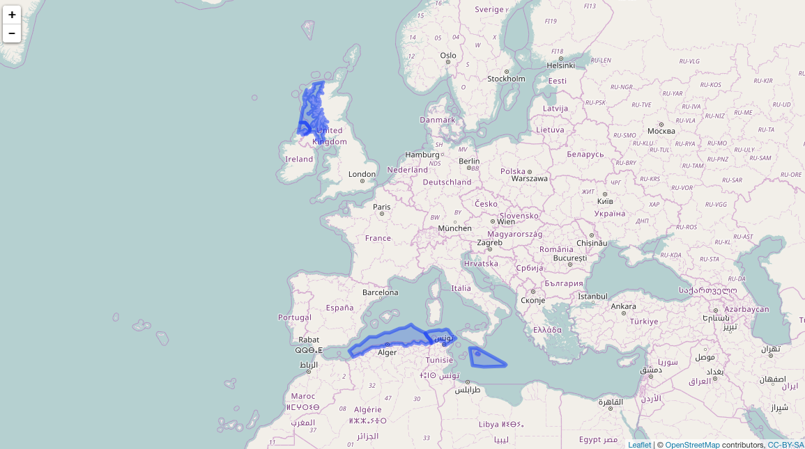
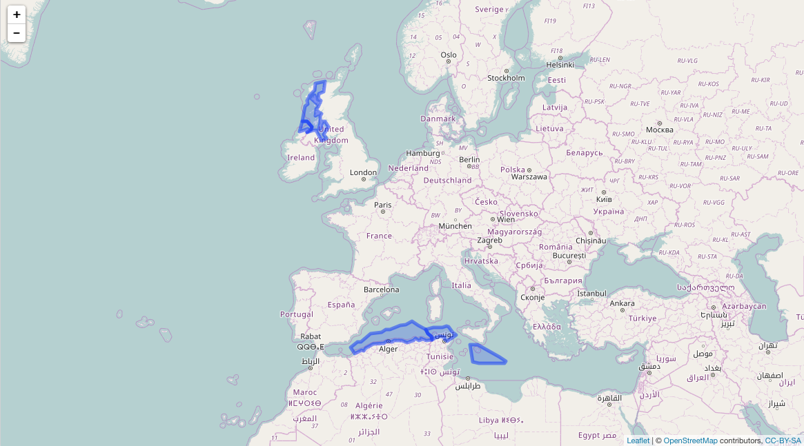

mregions introduction
mregions is useful to a wide diversity of R users because you get access to all of the data MarineRegions has, which can help in a variety of use cases:
- Visualize marine regions alone
- Visualize marine regions with associated data paired with analysis
- Use marine region geospatial boundaries to query data providers (e.g., OBIS (https://www.obis.org))
- Geocode - get geolocation data from place names
- Reverse Geocode - get place names from geolocation data
Install
Stable version
install.packages("mregions")Dev version
devtools::install_github("ropensci/mregions")
install.packages("leaflet")Get list of place types
res <- mr_place_types()
head(res$type)
#> [1] "Town" "Arrondissement"
#> [3] "Department" "Province (administrative)"
#> [5] "Country" "Continent"Get Marineregions records by place type
res1 <- mr_records_by_type(type = "EEZ")
head(res1)
#> MRGID
#> 1 3293
#> 2 5668
#> 3 5669
#> 4 5670
#> 5 5672
#> 6 5673
#> gazetteerSource
#> 1 Flanders Marine Institute (2016). Maritime Boundaries Geodatabase: Maritime Boundaries and Exclusive Economic Zones (200NM), version 9. Available online at https://www.marineregions.org/. http://dx.doi.org/10.14284/242
#> 2 Flanders Marine Institute (2016). Maritime Boundaries Geodatabase: Maritime Boundaries and Exclusive Economic Zones (200NM), version 9. Available online at https://www.marineregions.org/. http://dx.doi.org/10.14284/242
#> 3 Flanders Marine Institute (2016). Maritime Boundaries Geodatabase: Maritime Boundaries and Exclusive Economic Zones (200NM), version 9. Available online at https://www.marineregions.org/. http://dx.doi.org/10.14284/242
#> 4 Flanders Marine Institute (2016). Maritime Boundaries Geodatabase: Maritime Boundaries and Exclusive Economic Zones (200NM), version 9. Available online at https://www.marineregions.org/. http://dx.doi.org/10.14284/242
#> 5 Flanders Marine Institute (2016). Maritime Boundaries Geodatabase: Maritime Boundaries and Exclusive Economic Zones (200NM), version 9. Available online at https://www.marineregions.org/. http://dx.doi.org/10.14284/242
#> 6 Flanders Marine Institute (2016). Maritime Boundaries Geodatabase: Maritime Boundaries and Exclusive Economic Zones (200NM), version 9. Available online at https://www.marineregions.org/. http://dx.doi.org/10.14284/242
#> placeType latitude longitude minLatitude minLongitude maxLatitude
#> 1 EEZ 51.46483 2.704458 51.09111 2.238118 51.87000
#> 2 EEZ 53.61508 4.190675 51.26203 2.539443 55.76500
#> 3 EEZ 54.55970 8.389231 53.24281 3.349999 55.91928
#> 4 EEZ 40.87030 19.147094 39.63863 18.461940 41.86124
#> 5 EEZ 42.94272 29.219062 41.97820 27.449580 43.74779
#> 6 EEZ 43.42847 15.650844 41.62201 13.001390 45.59079
#> maxLongitude precision preferredGazetteerName
#> 1 3.364907 58302.49 Belgian Exclusive Economic Zone
#> 2 7.208364 294046.10 Dutch Exclusive Economic Zone
#> 3 14.750000 395845.50 German Exclusive Economic Zone
#> 4 20.010030 139751.70 Albanian Exclusive Economic Zone
#> 5 31.345280 186792.50 Bulgarian Exclusive Economic Zone
#> 6 18.552360 313990.30 Croatian Exclusive Economic Zone
#> preferredGazetteerNameLang status accepted
#> 1 English standard 3293
#> 2 English standard 5668
#> 3 English standard 5669
#> 4 English standard 5670
#> 5 English standard 5672
#> 6 English standard 5673Get a data.frame of region names
rnames <- mr_names("MarineRegions:iho")Search region names
Either pass output of mr_names()
mr_names_search(rnames, "IHO")
#> # A tibble: 7 x 6
#> layer name_first name_second id
#> <chr> <chr> <chr> <chr>
#> 1 MarineRegions:iho MarineRegions iho iho.1
#> 2 MarineRegions:iho MarineRegions iho iho.7
#> 3 MarineRegions:iho MarineRegions iho iho.18
#> 4 MarineRegions:iho MarineRegions iho iho.40
#> 5 MarineRegions:iho MarineRegions iho iho.53
#> 6 MarineRegions:iho MarineRegions iho iho.76
#> 7 MarineRegions:iho MarineRegions iho iho.94
#> # ... with 2 more variables: name <chr>, mrgid <chr>or don’t (but then mr_names_search() call takes longer)
mr_names_search("iho", q = "Sea")
#> # A tibble: 73 x 6
#> layer name_first name_second id
#> <chr> <chr> <chr> <chr>
#> 1 MarineRegions:iho MarineRegions iho iho.3
#> 2 MarineRegions:iho MarineRegions iho iho.4
#> 3 MarineRegions:iho MarineRegions iho iho.6
#> 4 MarineRegions:iho MarineRegions iho iho.7
#> 5 MarineRegions:iho MarineRegions iho iho.8
#> 6 MarineRegions:iho MarineRegions iho iho.10
#> 7 MarineRegions:iho MarineRegions iho iho.15
#> 8 MarineRegions:iho MarineRegions iho iho.16
#> 9 MarineRegions:iho MarineRegions iho iho.17
#> 10 MarineRegions:iho MarineRegions iho iho.27
#> # ... with 63 more rows, and 2 more variables: name <chr>, mrgid <chr>Get a region - geojson
res3 <- mr_geojson(key = "Morocco:dam")
class(res3)
#> [1] "mr_geojson"
names(res3)
#> [1] "type" "totalFeatures" "features" "crs"Convert to WKT
From geojson or shp. Here, geojson
res7 <- mr_geojson(key = "Morocco:dam")
mr_as_wkt(res7, fmt = 5)
#> [1] "MULTIPOLYGON (((41.573732 -1.659444, 45.891882 ... cutoffDealing with bigger WKT
What if you’re WKT string is super long? It’s often a problem because some online species occurrence databases that accept WKT to search by geometry bork due to limitations on length of URLs if your WKT string is too long (about 8000 characters, including remainder of URL). One way to deal with it is to reduce detail - simplify.
install.packages("rmapshaper")Using rmapshaper we can simplify a spatial object, then search with that.
shp <- mr_shp(key = "MarineRegions:eez_iho_union_v2", maxFeatures = 5)Visualize

map2
Simplify
library("rmapshaper")
shp <- ms_simplify(shp)It’s simplified:

map3